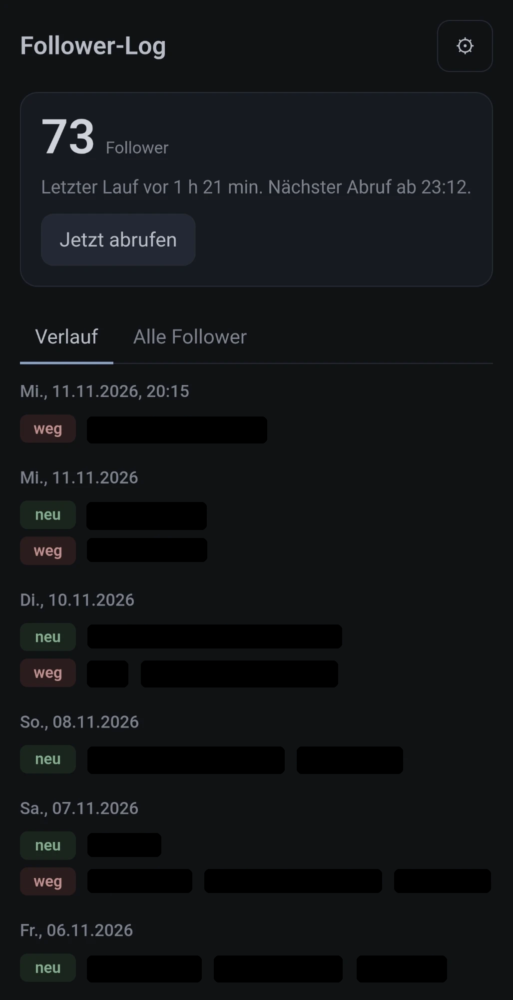

1 Vorlage kopieren
Öffne die Vorlage auf GitHub und melde dich an. Oben rechts sitzt der grüne Knopf Use this template. Im Menü darunter wählst du Create a new repository. Damit bekommst du eine eigene Kopie, die mit der Vorlage nichts mehr zu tun hat.
2 Als privates Repo anlegen
Gib dem Repo einen Namen, zum Beispiel follower-log. Bei Visibility wählst du Private. Das ist wichtig: In einem öffentlichen Repo könnte jeder mitlesen, wer dir folgt und wer gegangen ist. Dann Create repository.
3 Den ersten Lauf starten
In deinem neuen Repo öffnest du den Reiter Actions. Links klickst du auf Follower-Tracker, rechts auf Run workflow und im kleinen Menü noch einmal auf den grünen Knopf Run workflow. Nach etwa einer halben Minute liegen zwei neue Dateien im Repo: followers.txt mit der aktuellen Liste und log.md mit dem Logbuch. Der erste Eintrag heißt Startbestand. Ab jetzt läuft das jeden Tag von selbst.
4 Token: der Weg dorthin
github.com/settings/personal-access-tokens/newDie App läuft nur in deinem Browser und hat kein eigenes Konto. Damit sie deinen Workflow starten und dein privates Logbuch lesen darf, braucht sie einen Schlüssel von dir: einen Token. Den legst du auf GitHub an: Profilbild oben rechts, Settings, ganz unten links Developer settings, dann Personal access tokens, Fine-grained tokens und Generate new token. Schneller geht es über diesen direkten Link.
5 Token: nur für dein Logbuch-Repo
Gib dem Token einen Namen, an dem du ihn später wiedererkennst, etwa follower-log-app. Bei Expiration stellst du ein, wie lange er gilt. Bei Repository access wählst du Only select repositories und kreuzt in der Liste nur dein Logbuch-Repo an. So kommt der Token an nichts anderes heran, selbst wenn er einmal in falsche Hände gerät.
6 Token: genau zwei Rechte
Unter Permissions klickst du auf Add permissions und wählst Actions und Contents aus. Bei Actions stellst du den Zugriff auf Read and write, damit die App den Workflow starten kann. Contents bleibt auf Read-only, damit sie das Logbuch lesen, aber nichts verändern kann. Metadata setzt GitHub von selbst dazu. Mehr Rechte braucht die App nicht. Dann unten Generate token.
7 Token kopieren
github_pat_11ABCDEFG0…⧉ CopyGitHub zeigt dir den Token jetzt ein einziges Mal. Er beginnt mit github_pat_. Kopiere ihn sofort. Am einfachsten machst du die Schritte 4 bis 7 gleich auf dem Handy, dann kannst du ihn direkt in die App einfügen. Behandle ihn wie ein Passwort: nicht verschicken, nicht in Chats posten. Wenn er verloren geht oder abläuft, löschst du ihn auf derselben Seite und legst einen neuen an.
8 App öffnen und eintragen
dennismit2n.github.io/follower-log-vorlage
- Repository: konto/name, so wie es in der Adresse deines Repos steht
- Workflow-Datei bleibt, wie sie ist
- Token einfügen, speichern
Öffne auf dem Handy die App. Beim ersten Mal geht das Fenster Einstellungen von selbst auf, später erreichst du es über das Zahnrad. Bei Repository trägst du dein Konto und den Repo-Namen ein, getrennt durch einen Schrägstrich, zum Beispiel deinkonto/follower-log. Workflow-Datei lässt du stehen. Bei Token fügst du den kopierten Token ein. Nach Speichern legt die App sofort los. Der Token wird nur im Browser deines Geräts gespeichert und ausschließlich an api.github.com geschickt. Die App hat keinen eigenen Server.
9 Auf den Startbildschirm legen
Android (Chrome oder Edge): Oben in der App erscheint der Knopf Installieren. Antippen und bestätigen. Fehlt der Knopf, findest du im Browser-Menü mit den drei Punkten App installieren oder Zum Startbildschirm hinzufügen. iPhone (Safari): unten auf das Teilen-Symbol tippen, dann Zum Home-Bildschirm. Die Einstellungen aus Schritt 8 gelten je Browser. Auf dem iPhone trägst du sie am besten erst in der installierten App ein.
10 Fertig: so arbeitet die App
Jedes Mal, wenn du die App öffnest, fragt sie GitHub, wann der Workflow zuletzt gelaufen ist. Liegt das mehr als 178 Minuten zurück, startet sie ihn, wartet etwa eine halbe Minute und zeigt das Ergebnis. Sonst lädt sie nur das Logbuch neu und sagt dir, ab wann der nächste Abruf geht. Der tägliche Lauf um 09:09 UTC zählt dabei mit. Unter Verlauf siehst du je Tag, wer neu ist und wer weg ist. Unter Alle Follower steht die ganze Liste mit Suche.
So sieht es auf dem Handy aus

Ein Bildschirmfoto von meinem Handy, nach der Einrichtung. Oben steht der Stand, darunter, wann der Workflow zuletzt lief und ab wann der nächste Abruf geht. Die Namen im Verlauf habe ich geschwärzt, bei dir stehen dort deine Follower als Links zu ihren Profilen.
Wenn etwas hakt
- „Token ungültig oder abgelaufen“
- Der Token ist abgelaufen oder falsch eingefügt. Lege einen neuen an (Schritte 4 bis 7) und trage ihn unter ⚙ ein.
- „Repo oder Workflow nicht gefunden“
- Prüfe die Schreibweise von
konto/name. Oder der Token gilt nicht für dieses Repo (Schritt 5). - „Token darf das nicht“
- Ein Recht fehlt. Actions muss auf Read and write stehen, Contents auf Read-only (Schritt 6). Du kannst den Token auf GitHub nachträglich bearbeiten.
- Die Uhrzeit des täglichen Laufs ändern
- Steht in der README.
- Alles wieder loswerden
- In der App unter ⚙ Alles vergessen, auf GitHub den Token löschen. Das Repo kannst du behalten oder löschen.